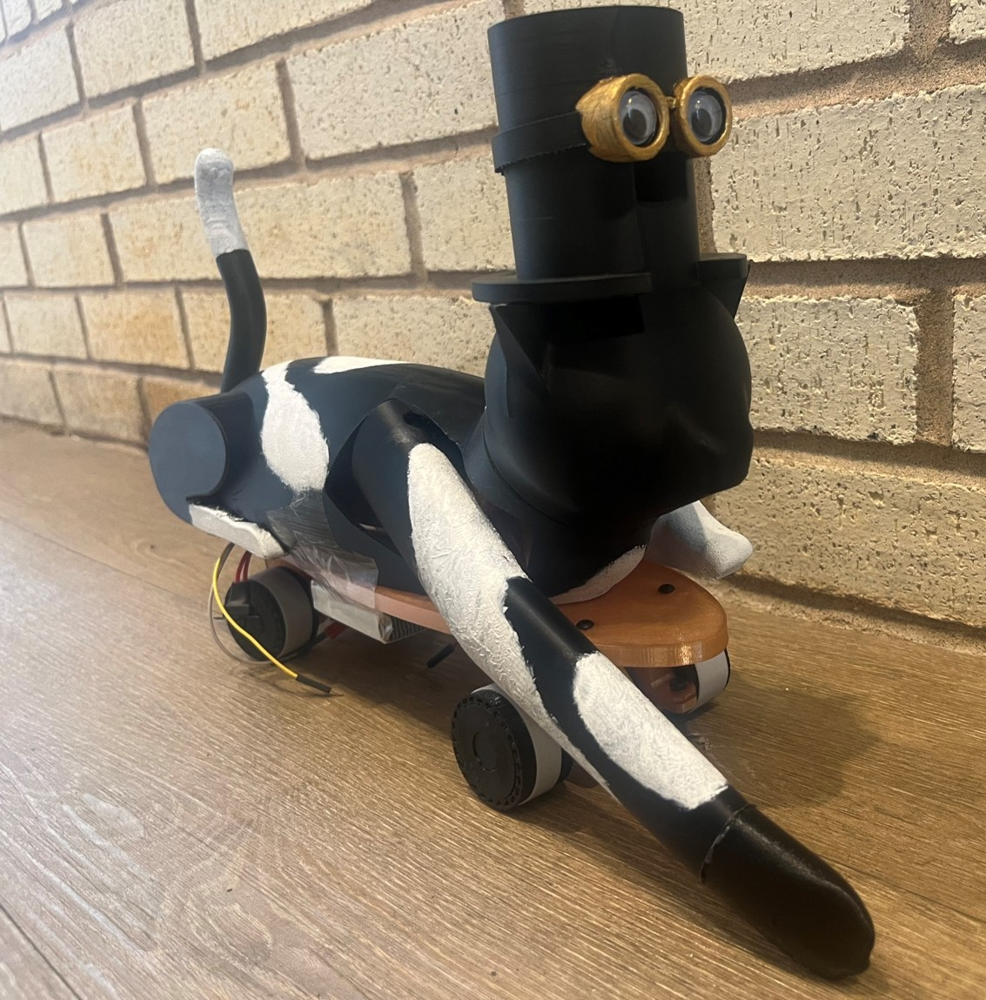

2026 · ME 444 · Interactive Toy Design
Felon the Freestylin’ Feline
Contributed heavily to an interactive skateboard cat, including a split chassis that separates aesthetic pieces from functional components. The architecture supports easier 3D printing, revision, and assembly while integrating the toy’s electromechanical systems; the team earned an Honorable Mention.
Team award: ME 444 Interactive Toy — Honorable Mention